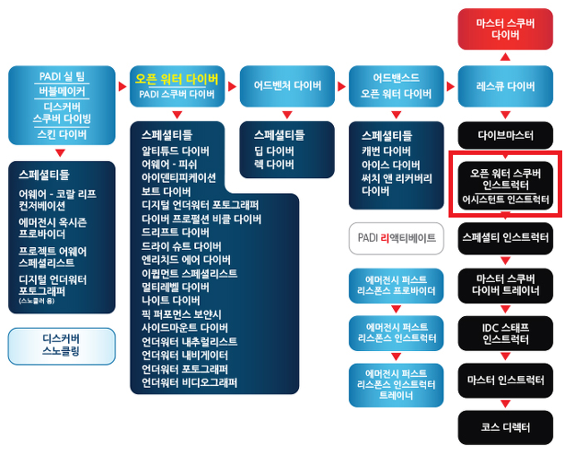

2019년 여름 ! 새로운 취미를 갖고싶던 저는
집에서 5분거리에 있는 한 다이빙 센터에 찾아가게 됩니다 🫢
취미로 가볍게 즐기기 위한 정도의 자격증을 취득하고 싶었고
오픈워터 + 어드밴스드 과정을 등록했습니다 :)
그렇게 수영장과 바다에서 기본 자격증 취득을 위한 교육을 받았고
강원도 제주도 사이판을 거닐며 황홀하고 아름다운 바다를 경험하게됩니다 !
<- 요기는 제주도의 '문섬' 입니다 🐠

2019년 여름 ! 새로운 취미를 갖고싶던 저는
집에서 5분거리에 있는 한 다이빙 센터에 찾아가게 됩니다 🫢
취미로 가볍게 즐기기 위한 정도의 자격증을 취득하고 싶었고
오픈워터 + 어드밴스드 과정을 등록했습니다 :)
그렇게 수영장과 바다에서 기본 자격증 취득을 위한 교육을 받았고
강원도 제주도 사이판을 거닐며 황홀하고 아름다운 바다를 경험하게됩니다 !
<- 요기는 제주도의 '문섬' 입니다 🐠
그렇게 많은 다이빙을 하다보니 프로가 되는 길이 궁금해진 저는...
스쿠버다이빙 강사가 되는 길에 발을 디뎌버립니다
강사가 되기위해서 제주도에 내려가 살면서 강사과정을 밟았습니다 🤿
2020년 가을에 진행된 PADI인스트럭터 시험에 합격하여
본격 다이빙 강사가 되었답니다 ! 그 후로는 제주와 서울을 오가며
소소하게 다이빙 강사로써 활동도 하게 되었습니다 :)
많은 다이버들은 다이빙을 왜 좋아하는가에 대한 다양한 이유를 갖고있습니다
다이빙의 세계는 여러분이 상상하는 이상으로 무궁무진하기 때문이죠 !
해양생물과 산호초를 보는게 좋아서, 바닷속 지형이 웅장해서,
케이브 다이빙, 난파선 다이빙 등등... 육지에서 할 수 있는 것처럼
바닷속에서도 아주 다양한 활동을 즐길 수가 있습니다!
//그러나 공기가 없으면 올라와야하는 시간적 아쉬움이 있을뿐..
그 중에서 저는 해양생물과 다이버들의 사진을 찍는 것을 가장 좋아합니다 🌊